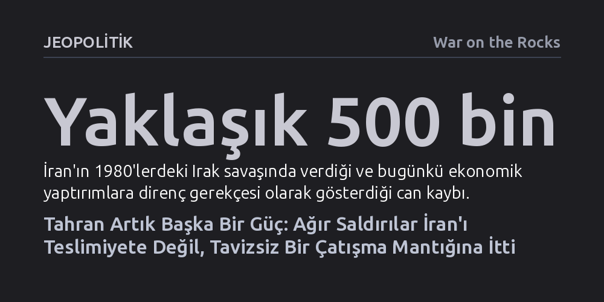

JEOPOLITIK · War on the Rocks · 2026-10-22
Ali Hamaney'in öldürülmesi ve maruz kaldığı ağır yıkım, İran yönetimini teslimiyete değil, kaybedecek bir şeyi kalmadığına inanan tavizsiz bir hayatta kalma stratejisine yöneltti. Yeni Tahran, Hürmüz Boğazı'nı ve ekonomik yıpratmayı kullanarak ABD'yi bölgeden püskürtmeyi amaçlayan sert bir doktrin izliyor.
İran'ın saldırgan ve uzlaşmaz adımlarının bir akıl tutulması veya çöküş işareti değil, ağır kayıplar sonrası şekillenen rasyonel ve varoluşsal bir hayatta kalma doktrini olduğunu gösteriyor.

Washington ve müttefikleri, İran'a yönelik son derece yıkıcı hava harekâtlarının ve tepe yönetimi hedef alan suikastların rejimi hızla teslimiyete zorlayacağını öngörüyordu. Beyaz Saray'ın birkaç hafta içinde zaferle sonuçlanacağını varsaydığı savaş, Dini Lider Ali Hamaney'in ve ailesinin hayatını kaybettiği ilk büyük bombardımanın üzerinden aylar geçmesine rağmen Tahran'ı masada taviz vermeye zorlayamadı. Aksine ABD yönetimi, savaş öncesi ezberlere uymayan bu tavizsiz tutumu anlamlandırmakta güçlük çekiyor ve İran'ın attığı adımları öngörülemez bir delilik olarak nitelendiriyor.
Oysa eski bir CIA analisti olan yazarın vurguladığı üzere, yaşananlar bir akıl tutulması değil; Tahran'ın karar alma mekanizmasındaki köklü ve sarsıcı bir zihniyet dönüşümüdür. Ali Hamaney'in öldürüldüğü saldırıda yaralanan oğlu ve yeni dini lider Mücteba Hamaney ile onun etrafında kenetlenen askeri şahinler, artık bambaşka stratejik ilkelerle hareket ediyor. Batılı gözlemcilerin Tahran'daki hizip kavgalarını ve yönetimin başsız kaldığı iddialarını aşırı abarttığını belirten yazar, siyasi ağırlık merkezinin tamamen savaşı bilfiil yürüten generallere kaydığına dikkat çekiyor.
Bu yeni kadro, eski dönemin temkinli ve gerilimi dengelemeye çalışan yaklaşımlarını bütünüyle terk etmiş durumda. Ortak bir sığınak psikolojisi etrafında birleşen "Yeni Tahran", rejimin hayatta kalabilmesinin tek yolunun hasımlarına azami maliyet ödetmekten geçtiğine inanıyor. Dolayısıyla Washington'ın rejim içi çatlaklardan medet umması, sahadaki gerçeklikle örtüşmeyen bir beklentiye dönüşüyor.
Yeni yönetimin stratejisini belirleyen en kritik kırılma noktası, lider kadronun kendisini fiilen ölüm fermanı imzalanmış birer hedef olarak görmesidir. İsrail ve ABD'deki şahin kanadın açıkça rejim değişikliği çağrıları yapması ve suikastların süreceğine dair sinyaller vermesi, Tahran'da şu kanaati pekiştirdi: Bir ateşkes imzalansa dahi karşı taraf fırsat bulduğu ilk anda yarım kalan işi tamamlamak için yeniden saldıracaktır. Bu güvensizlik ortamı, Mücteba Hamaney'in kamuoyu önüne çıkmayıp gizlenmesini de doğrudan açıklıyor.
Geçmişte İran, Kasım Süleymani suikastında ya da geçtiğimiz yıl yaşanan kısa süreli çatışmalarda olduğu gibi, gerilimi düşürecek diplomatik çıkış yollarını kabul etmişti. Eski lider Ali Hamaney, rejimin bekasını korumak adına stratejik sabır doktrinini savunuyor ve tırmanıştan kaçınıyordu. Ancak bugünün sertlik yanlısı generalleri, Hamaney'in bu temkinli tutumunun düşmanı caydırmadığını, aksine ona cesaret vererek kendi hayatına mal olduğunu düşünüyor.
Bu psikolojik dönüşüm, Amerikan ve İsrail caydırıcılığının Tahran nezdinde çökmesine yol açtı. İranlı yöneticiler intihara meyilli olmasalar da, rejimi savunmak uğruna ölmeyi çoktan göze almış durumdalar. Kendilerini zaten kaçınılmaz bir hedef olarak gören liderler, teslim olmak yerine son ana kadar düşmanlarına azami acıyı çektirme kararlılığıyla savaşı tırmandırıyor.
Tahran'ın direncini besleyen en önemli etkenlerden biri, Amerikan hava gücünün tek başına rejimi devirmeye yetmeyeceğini bizzat tecrübe etmiş olmasıdır. Nükleer tesisleri defalarca vurulan, askeri altyapısı tahrip edilen ve tepe lideri öldürülen İran yönetimi, Washington'ın elindeki konvansiyonel hava kozlarının sınırına ulaştığını hesaplıyor. Nüfusu 90 milyonu bulan bir ülkeye kara harekâtı düzenlemenin ABD kamuoyu nezdinde siyaseten göze alınamayacak devasa bir bataklık yaratacağını bilen Tahran, İsrail'in de tek başına bu hedefe ulaşacak askeri kütleye sahip olmadığının farkında.
Bu değerlendirme, Hürmüz Boğazı'nın küresel ekonomiye karşı stratejik bir silaha dönüştürülmesini beraberinde getirdi. Geçmişte Amerikan misillemesinden çekindiği için boğazı kapatmaya cesaret edemeyen İran, zaten en ağır saldırıya maruz kaldığı için bu çekincesini tamamen yitirdi. ABD'nin müttefiklerine danışmadan başlattığı bu savaş nedeniyle Washington küresel bir koalisyon kuramadı; Tahran ise tanker saldırılarıyla geçişleri felç ederek küresel piyasaları baskı altına aldı.
Amerikan donanmasının tankerlere eskortluk ederek ve İran radar sistemlerini hedef alarak boğazı kısmen açık tutma çabası, Tahran tarafından geçici bir taktiksel durum olarak görülüyor. Pentagon'un dünya genelindeki askeri hazır bulunuşluğunu zayıflatma pahasına yürüttüğü bu operasyonun uzun vadede sürdürülemez olduğunu düşünen İranlı liderler, coğrafyanın değiştirilemeyeceğini ve yabancı bir ordunun bölgede yaşayan halktan daha kalıcı olamayacağını savunuyor.
Kinetik saldırıların yerini alan Amerikan ekonomik abluka stratejisi, İran halkı üzerinde ağır bir hayat pahalılığı ve kıtlık yaratmış olsa da rejimin siyasi çözülmesini sağlayamadı. Tahran, 1980'lerdeki Irak savaşında yarım milyon kayıp vermiş ve karne sistemiyle yaşamış bir toplumsal hafızaya dayanarak, birkaç aylık veya yıllık yeni bir yoksulluğun rejimi deviremeyeceğini düşünüyor. Kuzey Kore ve Venezuela örneklerinde olduğu gibi, ekonomik umudunu kaybeden kitlelerin sanılanın aksine hemen devrimci bir kalkışmaya girişmediğini, rejimin de gerekirse acımasız şiddet kullanarak sokakları bastıracağını biliyorlar.
Dahası Tahran, Batı'nın ablukasını kırmak için Orta Asya kara ticaret yollarına ve Moskova ile Pekin'in sağladığı stratejik yaşam hattına güveniyor. Rusya ve Çin, Washington'ı Orta Doğu'da yıpratmak ve tek kutuplu küresel düzeni zayıflatmak amacıyla İran'a füze ve insansız hava aracı parçaları, mühimmat desteği ve istihbarat sağlıyor. Çin bankalarındaki petrol gelirleri sayesinde hayati ihtiyaçlarını karşılamayı sürdüren Tahran, kendisini küresel bir Amerikan karşıtı blokun vazgeçilmez parçası olarak konumlandırıyor.
Küresel enerji piyasalarının uzun vadeli bir krizi kaldıramayacağını öngören İran; dizel, gübre ve sıvılaştırılmış doğalgaz tedarikindeki tıkanıklıkların petrol fiyatlarını dayanılmaz seviyelere çıkaracağına inanıyor. Körfez Arap monarşilerinin kırılgan altyapılarını tehdit altında tutarak Washington üzerindeki bölgesel baskıyı artıran Tahran, ABD'deki Kongre ara seçimlerinde iktidara ağır bir siyasi bedel ödetmeyi hedefliyor.
Washington'ın çeşitli gizli kanallardan ilettiği diplomatik temas tekliflerinin sürekli reddedilmesi, İran'ın pazarlık arayışında olmadığı anlamına gelmiyor; sunulan çerçeveleri zehirli birer tuzak olarak gördüğünü kanıtlıyor. Daha önceki müzakere süreçlerinde uğradığı sürpriz saldırıları unutmayan yönetim, somut ve kalıcı güvenlik garantileri içermeyen hiçbir ateşkese yanaşmıyor. Tahran'ın asgari şartı, Hürmüz Boğazı'ndaki kontrolünün resmen tanınması ve gerçek bir yaptırım muafiyetinin sağlanmasıdır.
Eğer mevcut çatışma rejimi deviremeden son bulursa, Yeni Tahran'ın ilk işi cephaneliğini ve bölgesel müttefik ağlarını çok daha dayanıklı biçimde yeniden inşa etmek olacaktır. En kritik tehlike ise nükleer alanda beliriyor. Ali Hamaney'in nükleer silaha karşı koyduğu ahlaki ve stratejik sınırların düşmanı cesaretlendirmekten başka işe yaramadığını savunan yeni şahinler, nükleer silaha sahip bir Kuzey Kore'ye gösterilen ihtimam ile nükleer silahı olmayan İran'a yapılan saldırılar arasındaki tezadı çok net görüyor.
Sonuç olarak Beyaz Saray, rejimin içten çökeceği veya ekonomik baskıya boyun eğeceği yanılsamasından uyanmak zorunda. Ya çatışmayı çok daha maliyetli bir bölgesel felakete dönüştürecek ya da Yeni Tahran'ın değişen gerçekliğini kabul ederek gerçekçi bir diplomatik uzlaşıya razı olacaktır. Aksi takdirde, düşmanlarının korktuğu o nükleer güce dönüşmüş yeni bir İran ile yüzleşmek kaçınılmaz hale gelecektir.